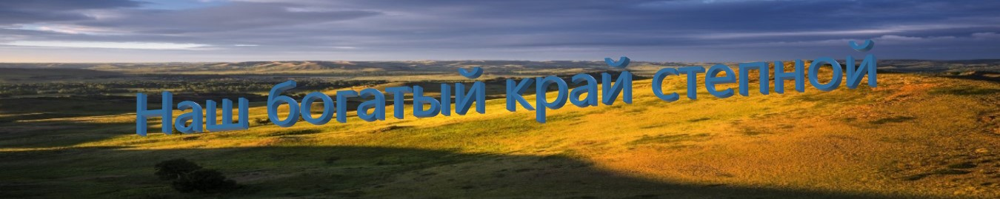

|  | ||||||||
|
Введение Музей Черномырдина Комплекс "Красная гора" Комплекс "Змеиная гора" Соль-Илецк и оз.Развал Заключение |
ВведениеПривет, дорогой читатель!Предлагаю тебе познакомиться с туристическим маршрутом Оренбургской области "Наш богатый край степной". На этом сайте представлены исторические и природные достопримечательности нашего степного края. Преимущество данного маршрута в том, что этот маршрут рассчитан на один день. Он включает в себя: выезд из г. Оренбург - музей Черномырдина - комплекс "Красная гора" - Змеиная гора - г. Соль-Илецк и озеро Развал (+ Краеведческий музей) - приезд обратно в г. Оренбург. Ты можешь интересно и познавательно провести время в поездке с семьей или друзьями! Приятного путешествия! (Небольшая инструкция по сайту: ниже пронумерованы объекты маршрута в том порядке, в котором путешественники должны проводить свою поездку. Обрати внимание на краткое описание пунктов маршрута и фотографий, а так же на количество километров и время в пути от предыдущего пункта маршрута до следующего.) |
|||||||
1. Музей Черномырдина(72 км., 1 час 10 минут) Историко-мемориальный музей Виктора Степановича Черномырдина — автономная некоммерческая организация. Музей основан 23 марта 2011 года и расположен в селе Чёрный Отрог Саракташского района Оренбургской области — на родине В. С. Черномырдина, председателя Правительства Российской Федерации в 1992—1998 годах. Музей основан по инициативе земляков и семьи Виктора Степановича Черномырдина. Идея создания музея одобрена и поддержана Президентом Российской Федерации Владимиром Путиным.
|
||||||||
2. Комплекс "Красная гора"(32 км.,31 минута) Находится в Саракташе и возвышается на правом берегу Сакмары. В конце 90-х здесь снимали исторический фильм Александра Прошкина, для которого построили крепость в натуральную величину. А в 1998 году проходили съемки исторической мелодрамы совместного российско-французского производства «Русский бунт» о событиях крестьянской войны. Фильм снят по мотивам произведений Александра Пушкина «Капитанская дочка» и «История Пугачевского бунта». После завершения работ объект разрушать не стали, и со временем он разросся, приобрёл культурное значение и теперь является одной из достопримечательностей региона. В связи с притоком туристов, развивается и посёлок. Гора возвышается на правом берегу реки Сакмара. Название горы объясняется цветом слагающих ее пород. Из-за красной глины и красного песчаника гора действительно выглядит красной, полностью оправдывая свое название. Особенно хорошо это видно в сухую, засушливую погоду. Впрочем, есть и другое название горы – Сарыкташ (в переводе — «каменные овцы» или «овечий камень»). Это название объясняется наличием на горе крупных камней, которых по легенде издалека приняли за овец. С Красной горы открывается красивый вид на окрестности, Саракташ и текущую под горой реку Сакмару.
|
||||||||
3. Змеиная гора(139 км., 2 часа 3 минуты) «Ханова гора» расположена в Соль-Илецком районе Оренбургской области между селами Беляевка и Михайловка. Гора известна тем, что в её разрезах обнажаются уникальные породы юрского периода возрастом от 60 до 320 миллионов лет. У подножия горы можно встретить много змей. Всего обитателями Хановой горы являются семь видов змей. Самые распространенные из них – гадюки и ужи. Самую большую известность и популярность имеет высокий обрыв (около 35 метров) с правой стороны реки Бердянка. Этот обрыв так знаменит тем, что он открывает разрез отложений юрского периода с большим количеством скоплений окаменелой фауны. В этих же местах были обнаружены кости крупного морского ящера, которые скорее всего принадлежали древнейшему животному – плезиозавру. Ханова гора своей ископаемой фауной, окаменелостями и завораживающими видами манит многочисленных туристов. Сувенирами с горы обычно становятся ростры белемнитов (чертовые пальцы) или раковины аммонитов, которые некогда населяли море юрского периода. Судя по окаменелостям, более 60 миллионов лет назад на этом месте было древнее море. В этих местах жители Оренбурга и области могут прикоснуться к древнейшей истории, не покидая родного края.
|
||||||||
4. Соль-Илецк и озеро Развал
|
ЗаключениеПротяженность данного маршрута составляет 373 км. или 5 часов 30 минут: 72 км. + 32 км. + 139 км. + 55 км. + 75 км.(от г. Соль-Илецк и озера Развал до г. Оренбург) = 373 км. 1 ч. 10 мин. + 31 мин. + 2 ч. 3 мин. + 47 мин. + 59 мин.(от г. Соль-Илецк и озера Развал до г. Оренбург) = 5 ч. 30 мин. Стоимость поездки будет составлять примерно 4000 рублей (если путешествует, например, семья из 4-х человек): примерно 2000 рублей на бензин (АИ-95, 36-40 литров) + примерно 2000 рублей на стоимость билетов. (цена билетов в музей Черномырдина колеблется от 100 рублей до 500 рублей на человека в зависимости от типа билета (детский, взрослый или льготный). Цена билетов в “Краеведческий музей” составляет: 50 рублей - льготный, 100 рублей - полный.) Стоимость питания не входит в итоговую стоимость поездки. На этом заканчивается описание туристического маршрута. Надеюсь, что тебе понравились вышеописанные места и ты непременно получишь удовольствие от их посещения! Удачных путешествий!:) | |||||||